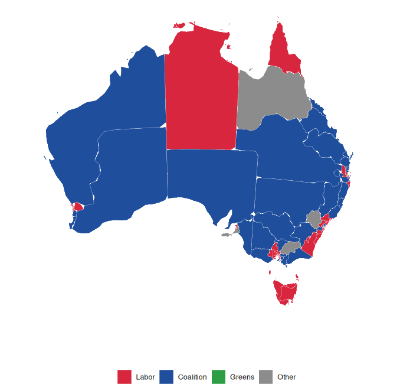
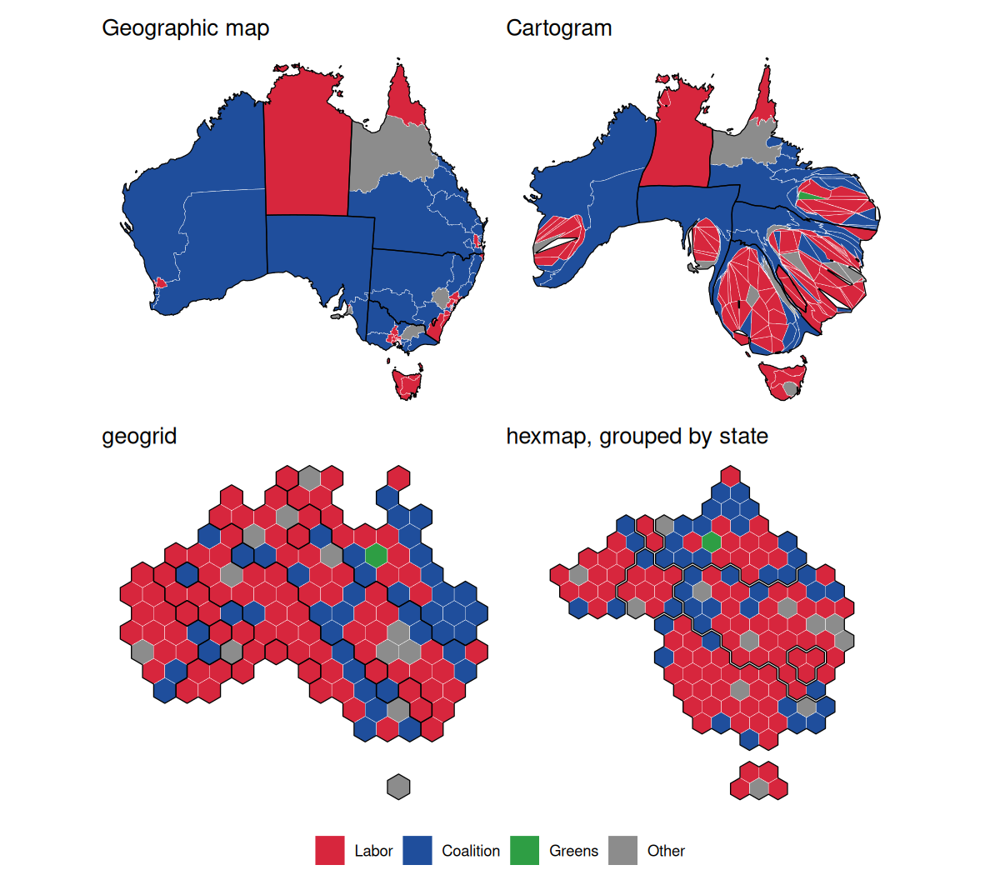
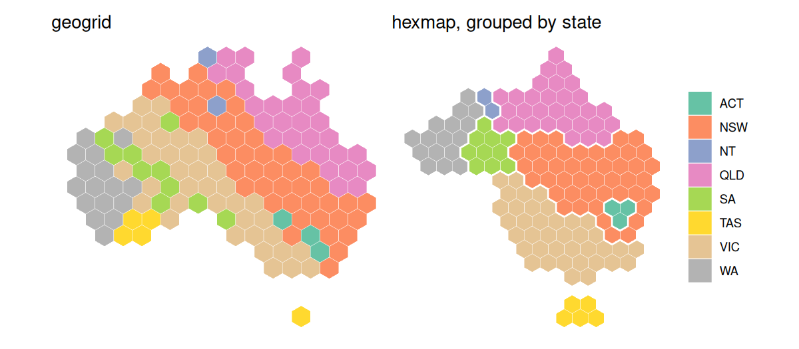

hexmap converts a map of regions into a map of equally sized hexagons, one for each region. Every region gets the same amount of ink, so small but important regions (such as inner-city electorates) are as visible as large, sparsely populated ones, while each region stays close to where it is on the map.
Installation
You can install the development version of hexmap like so:
install.packages("remotes")
remotes::install_github("numbats/hexmap")Usage
hexmap() takes an sf object and returns it with each region’s geometry replaced by a hexagon:
Optimal placement. Each region gets the hexagon that minimises the total squared distance between regions and their hexagons, so the relative positions of regions are kept.
Groups. With
group, the hexagons of each group (such as a state) are kept together, separated by a small gap (group_gap), and touch the same neighbouring groups as on the map.Group layouts.
group_layoutsets how groups are arranged: groups that keep their own shapes and positions (layout_hierarchy(), the default), a cartogram that keeps more of the overall outline (layout_diffusion()), compact blocks (layout_compact()), or a spatial treemap (layout_slice()).layout_repair()fixes the borders between groups of any layout. Seevignette("layouts")for how they compare.Islands. Distant landmasses, such as Tasmania, are tiled separately and kept apart from the mainland (
island_gap).Projections. Hexagons are regular in the projection they are made in (
crs), which defaults to an equal-area projection for maps in longitude and latitude. Seevignette("projections").-
Keeps your data.
hexmap()returns the map with each region’s geometry replaced by its hexagon, keeping every other column and the order of the rows, so the hexagons are easy to join to or compare with the regions. Given a geometry column instead, it returns a geometry column of hexagons, so it can be used indplyr::mutate()to keep both:
Without groups, hexmap() works in two steps that are also available on their own: hex_grid() tiles a map with hexagons, and hex_allocate() allocates them to regions, so hexmap(x) is the same as hex_allocate(x, hex_grid(x)). With groups, the hexagons are instead made and allocated by the layout.
Example: the 2025 Australian federal election
Labor won 94 of the 150 seats at the 2025 Australian federal election. On a geographic map the result looks like a Coalition win, as the large rural divisions hide Labor’s many small city seats. A cartogram with equal areas for each division shows the number of seats, but distorts the map beyond recognition. A hexagon grid made with geogrid gives each division the same space, but doesn’t keep states together. hexmap keeps each state together, in its place and with its neighbours.

hexmap includes the results as aus_election_2025: the simplified boundaries of each division from the Australian Bureau of Statistics, with its state and the party that won it from the Australian Electoral Commission, licensed under CC BY 4.0. The maps below are made in the Australian Albers equal-area projection, with the minor parties combined:
library(sf)
library(hexmap)
party <- c(ALP = "Labor", LP = "Coalition", LNP = "Coalition", NP = "Coalition",
GRN = "Greens")
election <- st_transform(aus_election_2025, 3577)
election$party <- ifelse(election$party %in% names(party), party[election$party], "Other")Each method then gives every division the same area:
library(cartogram)
library(geogrid)
# Cartogram
election$seats <- 1
election_cartogram <- cartogram_cont(election, "seats", itermax = 20)
# geogrid
grid <- calculate_grid(election, grid_type = "hexagonal", seed = 1)
election_geogrid <- assign_polygons(election, grid)
# hexmap
election_hexmap <- hexmap(election, group = state)
Colouring the divisions by state shows the difference. geogrid scatters the divisions of each state across the grid, so four of Tasmania’s five seats end up on the mainland. hexmap keeps each state in one piece, touching the same states as on the map.

The code for the plots (with ggplot2 and patchwork) is in README.Rmd.